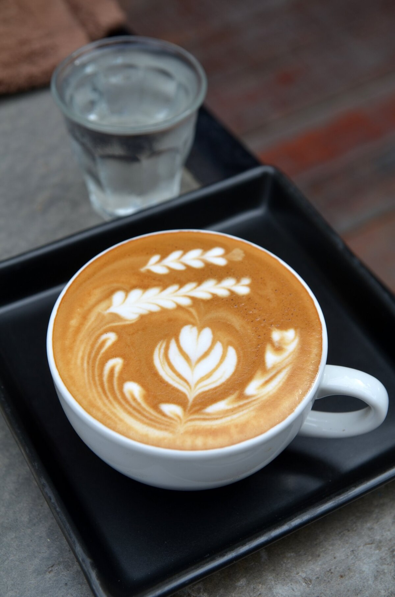
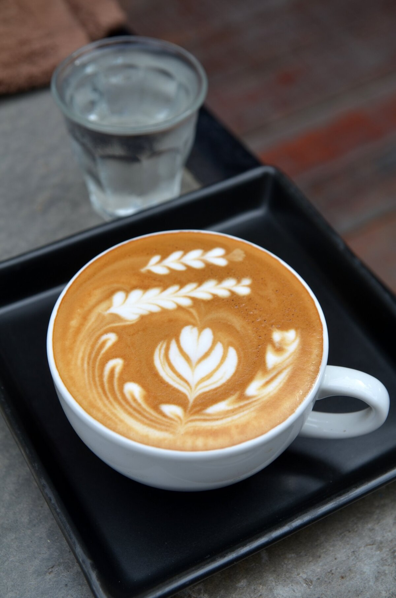

Latte
Một ly Latte ấm áp là sự kết hợp hoàn hảo giữa hương vị đậm đà của cà phê espresso và vị béo ngậy, mịn màng của sữa tươi được hấp nóng. Với lớp bọt sữa mềm mại và khả năng tạo hình nghệ thuật (latte art), Latte không chỉ là một thức uống mà còn là một tác phẩm nghệ thuật, mang đến trải nghiệm thưởng thức tinh tế và thư giãn.

 

Nguyên liệu
- Cà phê: 1 ly espresso (khoảng 30-45ml) hoặc 50ml cà phê pha phin/pha máy đậm đặc. (Espresso là tốt nhất để có hương vị cà phê mạnh mẽ).
- Sữa tươi: 200ml sữa tươi nguyên kem (full-fat milk) hoặc sữa tươi không đường. (Sữa nguyên kem giúp tạo bọt sữa dày và béo hơn).
- Đường: 1 muỗng cà phê đường (tùy chỉnh theo khẩu vị, có thể bỏ qua nếu không thích ngọt).
- Bột cacao hoặc bột quế: Một ít để trang trí (tùy chọn, tăng thêm hương vị và vẻ đẹp).
Cách pha chế
-
Bước 1: Chuẩn bị cà phê
- Pha một ly espresso đậm đà bằng máy pha cà phê espresso. Nếu không có máy, bạn có thể pha 50ml cà phê bằng phin hoặc máy pha nhỏ giọt, đảm bảo cà phê thật đậm đặc.
- Đổ cà phê đã pha vào ly hoặc cốc mà bạn sẽ dùng để uống Latte.
-
Bước 2: Hấp và đánh bọt sữa
- Đổ 200ml sữa tươi vào ca đánh sữa (milk pitcher) hoặc một nồi nhỏ.
- Đun nóng sữa trên bếp hoặc dùng vòi hơi của máy pha cà phê. Mục tiêu là làm nóng sữa đến khoảng 60-65°C (140-150°F). Không đun sôi sữa vì sẽ làm mất đi vị ngọt tự nhiên và khó tạo bọt.
- Nếu dùng vòi hơi: Đặt vòi hơi ngập nhẹ dưới bề mặt sữa, mở vòi hơi để tạo bọt. Di chuyển ca lên xuống nhẹ nhàng để tạo lớp bọt sữa mịn và dày.
- Nếu không có vòi hơi: Bạn có thể dùng máy đánh trứng cầm tay, máy tạo bọt sữa chuyên dụng, hoặc thậm chí là một chiếc phới lồng đánh tay để đánh bọt sữa. Đánh cho đến khi sữa có độ bông xốp và mịn màng.
- Gõ nhẹ ca đánh sữa xuống mặt bàn vài lần để loại bỏ các bọt khí lớn, giúp lớp bọt sữa mịn hơn.
-
Bước 3: Kết hợp cà phê và sữa
- Nghiêng ly cà phê một chút. Từ từ đổ sữa nóng vào ly cà phê.
- Khi đổ, hãy giữ cho lớp bọt sữa mịn ở phía dưới, chỉ để lớp sữa lỏng chảy ra trước.
- Khi ly gần đầy, từ từ đưa ca đánh sữa thẳng lên và dùng kỹ thuật đổ latte art (nếu bạn biết) để tạo hình trên bề mặt. Nếu không, chỉ cần đổ nhẹ nhàng để lớp bọt sữa mịn phủ đều lên trên.
-
Bước 4: Hoàn thiện và thưởng thức
- Nếu muốn, rắc một chút bột cacao hoặc bột quế lên trên bề mặt Latte để trang trí và tăng thêm hương vị.
- Thưởng thức Latte ngay khi còn nóng để cảm nhận trọn vẹn hương vị thơm ngon và lớp bọt sữa mịn màng.
Mẹo nhỏ để Latte ngon hơn:
- Chất lượng cà phê: Sử dụng hạt cà phê tươi mới rang và xay, pha espresso đúng chuẩn là yếu tố quan trọng nhất để có ly Latte ngon.
- Chọn sữa: Sữa tươi nguyên kem (full-fat) thường tạo bọt sữa tốt nhất và có vị béo ngậy hơn. Sữa lạnh cũng dễ đánh bọt hơn sữa ở nhiệt độ phòng.
- Nhiệt độ sữa: Đun sữa đến khoảng 60-65°C là lý tưởng. Sữa quá nóng sẽ mất đi vị ngọt tự nhiên và có thể bị cháy, sữa quá nguội sẽ khó tạo bọt.
-
Kỹ thuật đánh bọt sữa:
- Nếu dùng vòi hơi, hãy giữ vòi hơi ở vị trí thích hợp để tạo cả bọt khí (aeration) và làm nóng sữa (texturing).
- Nếu đánh bằng tay, đánh nhanh và đều để tạo bọt mịn.
- Đổ sữa: Đổ sữa từ từ và nhẹ nhàng giúp lớp bọt sữa hòa quyện với cà phê một cách hoàn hảo, tạo ra kết cấu mịn màng (microfoam).
- Độ ngọt: Latte truyền thống không quá ngọt. Bạn có thể thêm đường hoặc siro (vani, caramel) tùy theo sở thích.
- Ly uống: Sử dụng ly sứ hoặc thủy tinh có thành dày để giữ nhiệt tốt cho Latte.
▶️ Xem video hướng dẫn chi tiết
← Quay lại trang chủ
Bình luận và Đánh giá
Đánh giá của bạn
Chưa có bình luận nào.